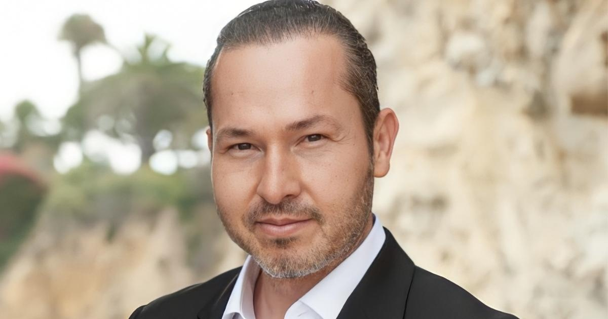

Two Americans detained in Venezuela ask Biden to secure release as deadline passesFor the past 20 months, Eyvin Hernandez's family has been waiting to hear if Venezuelan authorities would free the Los Angeles-based public defender from prison and allow him to come back to the U.S. They hoped the news would be delivered by Nov. 30, a target date that had been set by the Biden administration, but four days after the deadline — and even after an implicit threat that a failure for Venezuela to comply could trigger the U.S. to reinstate some recently lifted sanctions on the South American OPEC nation — in Venezuela. In a letter sent to the White House last week and exclusively obtained by CBS News, the 45-year-old Hernandez pleaded with President Biden to secure his release. "I've been held in captivity now for approximately 20 months, and there is nothing I want more than my own liberty and the liberty of my fellow brothers and sisters who are currently being held in captivity with me," Hernandez wrote. Hernandez also called on Secretary of State Antony Blinken and specifically named each of the Biden administration's top Latin American officials, including the National Security Council's Juan Gonzalez and hostage envoy Roger Carstens. Hernandez said he thinks they should meet face-to-face with Venezuelan government officials. "I believe that the most humane way for our liberty to be achieved is through establishing personal human relationships between the different members of the US and Venezuelan governments," Hernandez wrote. CBS News also obtained a recording of Hernandez dictating the letter from his prison in Caracas. The background noise is loud, but Hernandez can be heard pleading with his advocates to make sure the contents of the letter are made public. Advocates for Hernandez told CBS News that the plea was not coerced, but rather was Hernandez's own idea. Drew Havens, a friend of the family, told CBS It is not clear yet what the Biden administration will do to enforce its own deadline. In addition to Hernandez, two other Americans — Jerrel Kenemore, a North Texas software engineer and Joseph Cristella — also remain in Venezuela and have been designated as wrongfully detained by the State Department. That puts the full force of the U.S. government behind their release. But all three are now caught in a delicate diplomatic dance between the two countries. "They had until the evening of the 30th to make these kinds of decisions," National Security Council spokesperson John Kirby told "Face the Nation" moderator Margaret Brennan Sunday, referring to the Maduro government authorities. "Unfortunately, they didn't. And so we're now going back to policy options and reviewing what our chances are." Eyvin Hernandez's brother, Henry Martinez, told CBS News in a phone interview Friday that he spoke to his brother right before the Nov. 30 deadline, and that he had sounded optimistic that he might be coming home. Hernandez was arrested in March 2022 while on vacation on what his family says are false accusations of criminal association and conspiracy. Martinez said Hernandez went with a friend to Cucuta, Colombia, a town near the border of Colombia and Venezuela. No signs indicated the exact location of the border crossing. According to Martinez, Hernandez was approached by a man who asked him to pay a $100 bribe to enter Venezuela. After refusing to pay the bribe, armed men put a hood over Hernandez's head and in the back of a pickup truck. Since then, his family has been pressing the U.S. government to secure his release. In October 2023, the U.S. set the original Nov. 30 deadline with Venezuelan President Nicolás Maduro's government to begin to release Americans wrongfully detained in Venezuelan jails, among other requests. In a separate recording obtained by CBS News on Saturday, American Jerrel Kenemore made a plea from prison for "maximum positive pressure" on Joe Biden, saying that there is "a deal on the table" for 20 Venezuelans and 13 Americans for a prisoner swap. "It's really just a matter of our president saying 'A-ok,'" said Kenemore. "This side is offering 30 souls." Kenemore also said in the recording that he has reason to believe Caracas wants the U.S. to release a "favorite person" held by the U.S. He declined to name that individual, but others with knowledge indicated that Venezuelan authorities continue to press for the release of Alex Saab, a Colombian businessman imprisoned in Miami. Kenemore indicated in the recording that he wanted the possibility of a deal to be made public but did not indicate how he knew of it or who had asked him to share those details. It is not clear if that recording was coerced. A White House official told CBS News that the administration is pursuing all avenues to secure the freedom of the three wrongfully detained and is "in regular contact with their families. including as recently as this week." The official added, "we do not comment on negotiations let alone on what the other side may claim is their or our position during them." U.S.-Venezuela diplomacy In October, Maduro's government and its opposition agreed to certain guarantees for their upcoming presidential election in 2024. The deal, sometimes referred to informally as the "Barbados Agreement," was a step toward the Biden administration's calls to open the elections to opposition candidates, one of the stipulations to be completed before Nov. 30. In October, Blinken said in a statement, "all who want to run for president should be allowed the opportunity, and are entitled to a level electoral playing field, to freedom of movement, and to assurances for their physical safety." To encourage further measures toward free and fair elections, the U.S. lifted certain sanctions on Venezuela, allowing the sale of oil, gas, and gold. However, the State Department warned that if Venezuela did not open its elections to opposition candidates and begin to free wrongfully detained U.S. nationals and Venezuelan political prisoners by Nov. 30, the lifted sanctions would be reinstated. Raising the diplomatic stakes further is an agreement between the Biden administration and the Maduro government to deport migrants found to be ineligible for asylum or temporary legal status back to Venezuela. These direct deportations aimed to address an of migrants entering the U.S. from its border with Mexico, an issue that has proved a consistent for the Biden administration. The U.S. and Venezuelan governments have previously conducted prisoner releases. In October 2022, seven wrongfully detained Americans were released from Venezuela in a prisoner swap for two nephews of President Maduro's wife. Five of the Americans were members of the so-called "Citgo 6," a group of oil executives from the Houston-based Citgo refining company. They had been held in Venezuela for five years. During this swap, Hernandez was left behind. On Friday, a day after the Nov. 30 deadline, the State Department said that the U.S. is "deeply concerned" by the lack of progress on the release of wrongfully detained U.S. nationals and Venezuelan political prisoners, and will have "more to say in the coming days on next steps." In the meantime, Hernandez, and the other two "wrongfully detained" Americans are waiting for news on their impending release. Joseph Cristella has been held for almost 15 months, and Jerrel Kenemore for almost 21. Camilla Schick contributed to this report. for more features. |
 |